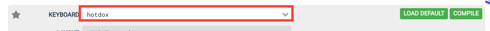
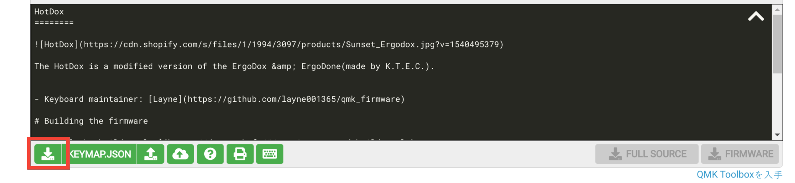

Flashing an ErgoDox with Linux
This guide talks through:
- configuring a keymap for your ErgoDox
- flashing an ErgoDox using Linux.
Configuring a Keymap for your ErgoDox #
I use the QMK configurator to configure the layout. Note to choose the correct keyboard in the “keyboard” selector:

Note the choice. It’ll be used later during when flashing.
Once you have the desired configuration, I like to download the scheme as json:
- It’s human readable, and therefore easy to make small edits.
- You can upload it back to the configurator to make edits again.

Flashing an ErgoDox using Linux #
1. Install the QMK toolkit #
Follow the instructions on the QMK documentation.
Some distributions have packages, so use your package manager may be able to install it. For example on Arch Linux, there is a community package:
sudo pacman -S qmk
Once you’ve installed the tools, run qmk setup once to install it’s prerequisites, such as the qmk firmware loaders:
qmk setup
2. Create a new keymap for your keyboard #
QMK stores multiple keymaps for a single keyboard. So start by creating one for your own:
qmk new-keymap -kb $keyboard_name
Where $keyboard_name is the name of the keyboard from the configuration step.
The output will tell you where the keymap is located on your filesystem:
$ qmk new-keymap -kb ergodox_ez
Keymap Name: yusuke
Ψ yusuke keymap directory created in: /home/tsutsumi/qmk_firmware/keyboards/ergodox_ez/keymaps/yusuke
Ψ Compile a firmware with your new keymap by typing:
qmk compile -kb ergodox_ez -km yusuke
That puts the files that are customized for your keymap into that directory, including a keymap.c file.
3. Use json2c to write the final keymap #
qmk json2c parses the QMK json format, and writes out the c file that is expected in the keymap directory. So take the file generated from the configuration step, and use that to write to your newly created keymap:
$ qmk json2c $json_file -o /home/tsutsumi/qmk_firmware/keyboards/ergodox_ez/keymaps/yusuke/keymap.c
Ψ Wrote keymap to /home/tsutsumi/qmk_firmware/keyboards/ergodox_ez/keymaps/yusuke/keymap.c.
4. Build and load the firmware #
Now that you have all of the pieces, it’s just a matter of loading and flashing your firmware!
Put your device into DFU mode while attached to your computer, then compile and flash your firmware:
qmk compile -kb ergodox_ez -km yusuke
qmk flash -kb ergodox_ez -km yusuke
You should see something at the end like:
Checking file size of ergodox_ez_yusuke.hex [OK]
* The firmware size is fine - 20916/32256 (64%, 11340 bytes free)
Teensy Loader, Command Line, Version 2.1
Read ".build/ergodox_ez_yusuke.hex": 20916 bytes, 64.8% usage
Waiting for Teensy device...
(hint: press the reset button)
Found HalfKay Bootloader
Read ".build/ergodox_ez_yusuke.hex": 20916 bytes, 64.8% usage
Programming....................................................................................................................................................................
Booting
note: there may be prerequisites for compiling / booting for some variations of ErgoDox. For example, for the ErgoDox-EZ, I found I needed to install teensy-loader-cli. I found this out when attempting to flash the device.
And you’re done!
Conclusion #
That’s it! Enjoy your newly flashed ErgoDox.